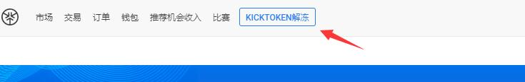
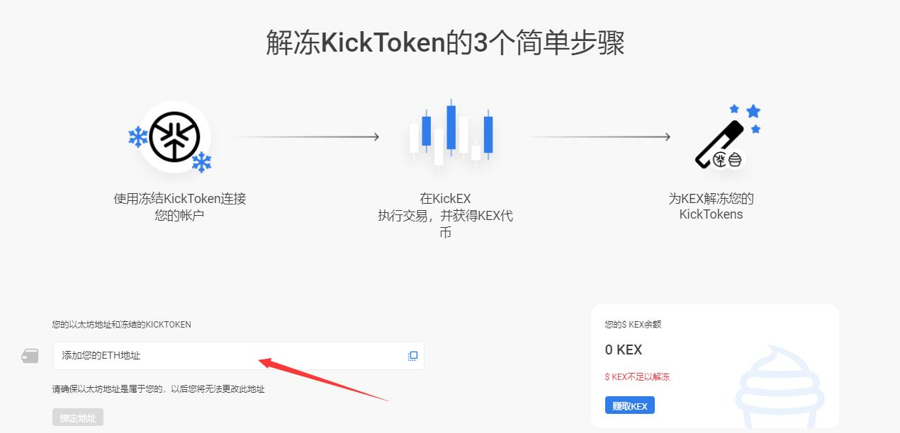

kick币空投888888如何转帐交易
kick币空投的888888是冻结代币，但也值几百美元了，下面教大家如何解冻交易。
若要解冻冻结的KickToken，您需要先在KickEX交易所注册。 如果您来自高风险国家，或者如果您想无限次充值或提款，则需完成《了解你的客户》程序。同时，如果您所在的国家未在高风险国家列表中，在无需通过《了解你的客户》的情况下，欢迎您每月存款最高15,000欧元，并提取不超过1000欧元的等价货币。 请注意，解冻您的KickTokens不会被视为提款，且不会浪费提款限额。
具体解冻方法：
1、通过https://ref.kickex.com/01023c72a2fb31af972b098e03d56129注册KickEX，通过这个地址注册额外奖励50000kick.
2、打开https://kickex.com/登录，点击“Kicktoken解冻”绑定你的ETH地址


3、转一些币进交易所进行一次大于71.6 USDT的交易获得KEX，使用KEX解冻kick。
冻结kick币及普通代币有何不同？
冻结kick币智能合约中预先存在解冻选项。 冻结kick币无法转移到任何地方，但是可以在满足某些FrozenDrop条件后将其解锁。
我在几个钱包里收到了FrozenDrop。 我可以解锁所有kick币吗？
您只能绑定1个钱包，并且该钱包必须具有冻结的KickToken。 每位使用者只能有一个钱包。 请记住，在确认钱包地址之后，您将无法取消或更改钱包，因此，请仔细确认钱包地址。
交易完成后，将会如何处理冻结的KickTokens？
未冻结的KickTokens会转换为普通代币，这意味着您现在可以执行交易、提取或交换。